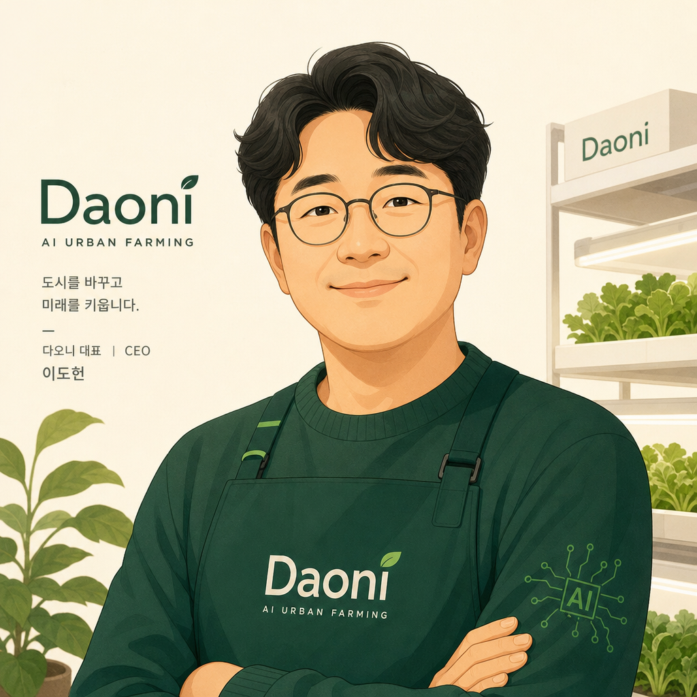

다온이
박인수 PARK INSOO
Founder & CEO
도심 빈 공간을 동네 식자재 마트로.
AI가 육종부터 판매까지, 사장 대신 풀로 운영합니다.
QR로도 저장 가능
About · DAONi
다오니는 도심 빈 공간(염창동)에 차린 수직농장 + 동네 식자재 마트입니다. 육종 · 재배 · 환경 관리 · 마케팅 · 홍보 · 판매 · 정산까지, 한 명의 AI 운영자가 사장 대신 풀로 운영합니다.
v2.0 비전 · 검토 중
장애인 일자리 사회적기업 모델로의 확장을 검토 중. AI가 의사결정·복잡 업무를 처리하고, 사람은 수확 보조·포장·배송처럼 단순·반복 작업에 집중. 마을 단위 푸드 시스템으로 자랄 수 있어요.